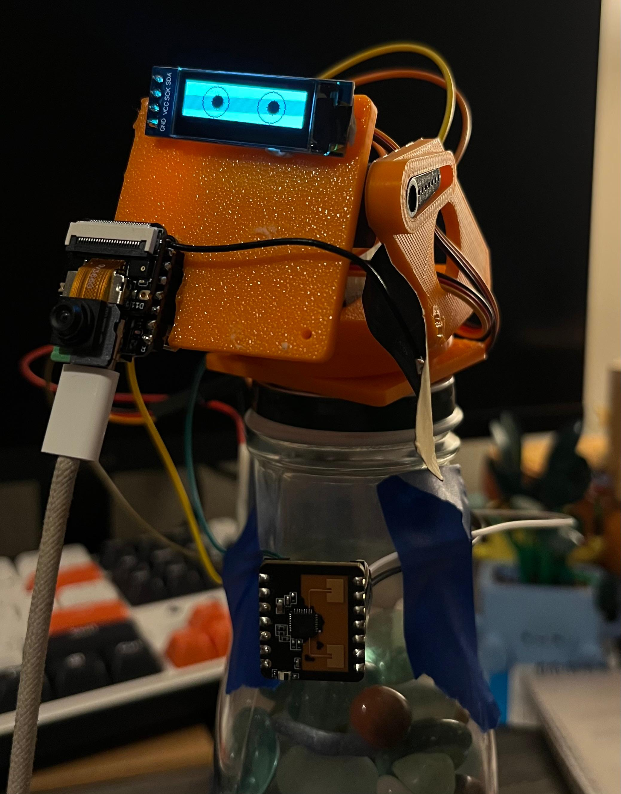

CPRE 5750 / HCI 575 · Computational Perception · Iowa State University · Spring 2026
MIRA
Multimodal Interactive
Recognition Assistant
A privacy-preserving, gesture-activated HCI system for blind and visually impaired users — running face detection and gesture recognition fully on-device, with a local LLM for natural language interaction.
MIRA is a physical robotic assistant built on the Seeed XIAO ESP32-S3 Sense that enables gesture-gated, voice-mediated interaction for blind and visually impaired (BVI) users without requiring a touchscreen or always-on microphone. Face detection and gesture classification run entirely on-device using Espressif’s ESP-DL INT8-quantized inference library at 5–10 fps. A pan-tilt servo assembly tracks the detected face using a Kalman-filtered controller. Audio capture and LLM interaction are unlocked only after an explicit open-palm gesture is observed for at least 2 seconds of face presence, eliminating ambient capture. Natural language responses are generated by a local Gemma 4 2B model or via Groq’s cloud API, then delivered through text-to-speech. Every design decision is grounded in Self-Determination Theory and treats privacy as a psychological safety requirement rather than a compliance checkbox.
01 · Motivation
Why existing assistants fail BVI users
Commercial voice assistants were designed around a sighted-user mental model: screens for confirmation, wake words for activation, and continuous cloud upload for processing. This creates three structural failure modes that disproportionately affect blind and visually impaired users.
Failure modes
| Failure Mode | Mechanism | Impact on BVI User |
|---|---|---|
| Always-on capture | Microphone active before any user action | User cannot visually verify recording state; no tactile indicator |
| Cloud egress | Audio and frames uploaded to remote servers | User cannot read on-screen upload indicators; data leaves device silently |
| Screen dependency | Confirmation dialogs and errors shown on display | Permission prompts, error messages, and state indicators are inaccessible |
"Privacy is not secrecy — it is the capacity for self-determination over one’s own information." — Alan Westin, Privacy and Freedom (1967)
Problem statement
Core thesis: Vision processing local to the device, gesture-gated audio capture, and a local LLM eliminate the three principal failure modes of commercial assistants for BVI users: always-on capture, cloud egress, and screen dependency.
Comparative framing
| Dimension | Commercial Assistants | MIRA |
|---|---|---|
| Activation | Always-on microphone / wake word | Explicit open-palm gesture after 2-second face gate |
| Inference | Cloud (Amazon, Google, Apple) | On-device ESP-DL + local Gemma 4 2B |
| Screen | Mandatory touchscreen | Zero-screen; OLED status only |
| Data egress | Continuous audio/video stream | Selected short clips sent only on user gesture |
| Privacy model | Continuous cloud telemetry | Nothing transmitted without explicit gesture gate |
BVI User
|
+-----------+-----------+
| |
Commercial Path MIRA Path
| |
Always-on mic Explicit gesture
Cloud inference On-device inference
Screen confirmation OLED + TTS feedback
Continuous egress Zero ambient capture
| |
Privacy risk Privacy preserved
Screen barrier Accessible interface
Figure 1 — Divergence between commercial assistant design assumptions and BVI user requirements.
02 · Hardware
Platform & Components
MIRA runs on the Seeed XIAO ESP32-S3 Sense — a thumb-sized board with built-in OV2640 camera and PDM microphone — paired with a pan-tilt servo head, an SSD1306 OLED display, and an optional MicroSD card. A connected laptop runs the LLM and TTS backend.

Figure 2 — MIRA hardware assembly. Orange 3D-printed head, SSD1306 OLED eyes, OV2640 camera module, pan-tilt servo structure, and the XIAO ESP32-S3 Sense board mounted at the base.
Component specification
| Component | Part | Specification |
|---|---|---|
| MCU | Seeed XIAO ESP32-S3 Sense | Dual-core Xtensa LX7 @ 240 MHz · 512 KB SRAM · 8 MB PSRAM · 8 MB flash |
| Camera | OmniVision OV2640 | Built-in DVP 8-bit · 240×240 RGB565 · ~10 fps with inference active |
| Display | SSD1306 OLED (I2C) | 128×64 px · animated eye bitmaps · system status feedback |
| Audio | PDM MEMS Microphone (I2S) | Built-in · async DMA capture · activated by open_palm gesture only |
| Actuation | 2× Servo (PWM/LEDC) | Pan GPIO 2 · Tilt GPIO 3 · Kalman-filtered face-tracking controller |
| LLM backend | Gemma 4 2B / Groq API | Local CPU inference (offline) or llama-4-scout-17b via Groq (~1–3 s) |
| Storage | MicroSD (SPI) | Optional · snapshot dataset collection · gesture template persistence |
GPIO mapping
| GPIO | Function | Interface |
|---|---|---|
GPIO 2 | Servo Pan | LEDC PWM |
GPIO 3 | Servo Tilt | LEDC PWM |
GPIO 5 | I2C SDA (OLED) | I2C |
GPIO 6 | I2C SCL (OLED) | I2C |
GPIO 42 | I2S Microphone Data | I2S DMA |
Compute constraint
03 · Architecture
System Architecture
MIRA is organized as two cooperating layers. The embedded firmware runs on the ESP32-S3 under FreeRTOS and handles all real-time sensing, inference, actuation, and HTTP serving. The Python companion on a connected laptop handles LLM inference, TTS synthesis, and audio post-processing.
ESP32-S3 (XIAO Sense) Laptop +------------------------------------------+ +-------------------------------+ | | | | | OV2640 RGB565 240x240 | | assistant.py (headless) | | | | | or | | v | | serial_viewer.py (GUI) | | PSRAM frame buffer (115 KB) | | | | | | | +--------------------------+ | | +---> ESP-DL HumanFaceDetect | | | Gemma 4 2B (local CPU) | | | | MSR + MNP INT8 | | | Groq API (cloud) | | | | | | | pyttsx3 TTS | | | +---> Skin-blob BFS (YCbCr) | | +--------------------------+ | | | Gesture classifier | | | | | | +-------------------------------+ | +---> Pan-tilt servo (LEDC PWM) ^ | | | Kalman filter | USB-JTAG | | | RAW_GRAY DETECT JSON | CMD text | +---> SSD1306 OLED eyes <---------+ v | | ----------> HTTP /cmd | +---> /detect /stream HTTP | | | | | I2S DMA Microphone | | (active only on open_palm gesture) | | | +------------------------------------------+
Figure 3 — Full system data flow. The ESP32-S3 handles sensing, inference, and actuation. The laptop handles LLM and TTS. Communication is bidirectional over USB-JTAG and HTTP.
FreeRTOS task model
| Task | Core | Priority | Responsibility |
|---|---|---|---|
camera_task | Core 1 | High | Frame capture, format conversion, push to vision queue |
vision_task | Core 1 | High | ESP-DL INT8 face/gesture inference, servo update trigger |
uart_console_task | Core 0 | Medium | USB-JTAG command parsing, raw frame streaming |
web_server_task | Core 0 | Low | HTTP dashboard, MJPEG stream, /detect, /status |
oled_task | Core 0 | Low | Animated eye bitmap rendering, system state display |
Interaction state machine
+-------------------+
| IDLE | Camera DMA off. Servo resting.
| low-power wait | OLED: resting eye state.
+-------------------+
|
face_detected
|
v
+-------------------+
| FACE_DETECTED | Camera active. Servo tracking.
| 2-s gate starts | OLED eyes follow face position.
+-------------------+
|
gate_elapsed (2 s)
|
v
+-------------------+
| GESTURE_GATE | Monitoring gesture within face ROI.
| awaiting signal | No audio or action until signal.
+-------------------+
| | |
open_palm point closed_fist
| | |
v v v
+---------+ +--------+ +----------+
| VOICE | | VISION | | CANCEL |
| mic DMA | | frame | | -> FACE |
| -> LLM | | -> LLM | | _DETECTED|
| -> TTS | | -> TTS | +----------+
+---------+ +--------+
| |
response complete
| |
+----+----+
|
v
+-------------------+
| FACE_DETECTED | Return to tracking state.
+-------------------+
Figure 4 — Six-state interaction FSM. Privacy-sensitive resources (microphone DMA, LLM API) are only accessible from the VOICE or VISION states, which require traversal through the 2-second face-presence gate.
State definitions
- IdleCamera DMA disabled. Servo at rest. System monitors for face entry. Minimum power draw. OLED shows resting state.
- Face DetectedCamera active. Face bounding box locked. 2-second presence gate begins. Servo tracks face via Kalman-filtered pan-tilt. OLED eyes follow face.
- Gesture GateSystem observes gesture within face ROI. No audio capture, no LLM call, no network traffic until explicit gesture signal is received.
- Voice (Open Palm)Microphone DMA activates. 3–5 s audio clip captured. Forwarded to LLM (Groq or local Gemma). Response delivered via pyttsx3 or Groq Orpheus TTS.
- Vision (Point)Current PSRAM frame snapshot captured. Sent to LLM with prompt: “What is the object being pointed at?” Response delivered via TTS.
- Cancel (Closed Fist)Stop active recording or pending LLM call. Transition back to Face Detected. Microphone DMA disabled immediately.
Detection JSON schema
{
"frame_id": 42,
"obj": 1,
"kind": "face", // "face" | "none"
"side": "center", // "left" | "center" | "right"
"bbox": [x1, y1, x2, y2],
"gesture": "open_palm", // "open_palm" | "point" | "hand" | "none"
"iou": 0.85
}
Vision pipeline
OV2640 DVP capture
|
v
PSRAM frame buffer 240x240 RGB565 (~115 KB)
|
+-----> JPEG encode -------> /stream HTTP (MJPEG)
|
v
ESP-DL HumanFaceDetect (INT8)
MSR model: candidate detection
MNP model: landmark regression
|
+-- no face --> back to idle
|
v
Face ROI extracted (bbox)
|
+-----> Servo controller
| Kalman filter (pan/tilt)
| LEDC PWM update
|
+-----> OLED eye renderer
| eye position = face center
|
v
Skin-blob BFS within ROI (YCbCr color space)
|
v
Gesture classifier
Template IoU matching against stored templates
|
v
Detection JSON --> /detect endpoint + USB-JTAG stream
Figure 5 — Full on-device vision pipeline from frame capture to detection output. All processing runs on ESP32-S3 LX7 cores with no external compute.
04 · Design Rationale
Human-Centered Design Justification
Each hardware and software decision in MIRA is grounded in a documented human psychological need from Self-Determination Theory (Deci & Ryan, 1985), which identifies three universal intrinsic needs: autonomy, competence, and relatedness. These needs are particularly salient for users with visual impairment, where technology often imposes dependency rather than enabling self-determination.
Self-Determination Theory mapping
| SDT Need | Definition | MIRA Design Decision |
|---|---|---|
| Autonomy | Acting as the author of one’s own behavior, initiating actions from self-chosen values | Gesture-driven activation. The user chooses when the system listens. No wake word, no button, no sighted assistant required. The user sets the pace. |
| Competence | Feeling effective and capable in interactions with the environment | Consistent, predictable gesture vocabulary. Template IoU training adapts to the user’s specific gestures, not a factory model. Deterministic behavior builds trust. |
| Relatedness | Feeling connected and able to participate in shared social and informational environments | Object identification via point gesture restores access to ambient information: “What is on this shelf?”, “What does this sign say?” — normalizing participation. |
Privacy threat model for BVI users
Blind users are disproportionately exposed to surveillance risk because they cannot visually verify camera or microphone state, cannot read on-screen recording indicators, and rely on voice interfaces that are inherently always-on by design. MIRA treats privacy as a psychological safety requirement.
| Threat | Psychological Impact | MIRA Mitigation |
|---|---|---|
| Always-on camera | Constant vulnerability, loss of bodily autonomy | Camera DMA only active when camera_is_enabled() returns true; explicitly toggled by state machine |
| Passive audio capture | Anxiety, chilling effect on speech | Microphone DMA starts only on open_palm after 2-second face gate; stops on closed_fist or timeout |
| Cloud data harvesting | Loss of informational self-determination | Gemma 4 2B runs entirely locally; Groq used only when user selects cloud mode; zero default egress |
| Unpredictable activation | Learned helplessness, erosion of trust | Deterministic FSM: gate → gesture → action; OLED feedback at each transition |
Intentional friction — the 2-second gate
The 2-second face-presence requirement before accepting any gesture is a deliberate application of Human Factors friction design (Norman, The Design of Everyday Things, 1988):
- Reduces false triggers that erode trust in the competence dimension of SDT
- Gives the user time to compose intent before the system acts (autonomy)
- Creates a perceptible feedback loop: face detected → gate timer → gesture → response
- Mirrors the natural human signal of readiness in conversation: eye contact, pause, then speech
- Satisfies Norman’s Feedback Principle for users who cannot interpret a display
05 · Capabilities
System Capabilities
On-device vision
All vision inference runs directly on the ESP32-S3 LX7 cores using Espressif’s ESP-DL library with INT8-quantized models. No external accelerator, cloud upload, or network connection is required for detection. Per-frame inference runs in 100–200 ms, achieving ~5–10 fps.
Gesture vocabulary
| Gesture | Trigger Condition | System Action |
|---|---|---|
| Open Palm | Face present ≥ 2 s, palm facing camera | Activate microphone DMA → capture 3–5 s audio → send to LLM → TTS response |
| Point | Face present ≥ 2 s, index finger extended | Capture PSRAM frame snapshot → query LLM: “What is the object being pointed at?” → TTS |
| Closed Fist | Any active state | Stop current recording or pending LLM call → return to Face Detected state |
LLM backend options
llama-4-scout-17b~1–3 s latency
Requires internet + API key
Orpheus TTS (Diana/Autumn)
Zero data egress
~10–30 s latency
pyttsx3 TTS
Automatic retry logic
Configurable at runtime
WAV encoding
Groq Whisper STT
Groq Orpheus TTS
Gesture training workflow
MIRA learns the user’s specific gesture shapes through a template IoU workflow. No model retraining or firmware recompilation is required. Templates are added over HTTP or the UART console and stored in PSRAM or MicroSD.
Operator ESP32-S3 PSRAM / MicroSD
| | |
| POST /cmd?op= | |
| gesture_train_start | |
|-------------------------->| |
| | mode = GESTURE_TRAIN |
| | |
| POST /cmd?op= | |
| gesture_label | |
| &value=open_palm | |
|-------------------------->| |
| | pending_label = open_palm |
| | |
| [perform gesture] | |
| | |
| POST /cmd?op=mark | |
|-------------------------->| |
| | capture ROI frame |
| |-------------------------->|
| | store template |
| |<--------------------------|
| | |
| [repeat for each label] | |
| | |
| POST /cmd?op= | |
| gesture_train_stop | |
|-------------------------->| |
| | mode = EXECUTE |
Figure 6 — Operator gesture training sequence over HTTP. Templates persist in PSRAM and optionally on MicroSD across power cycles.
Web dashboard endpoints
| Endpoint | Method | Description |
|---|---|---|
/stream | GET | Multipart MJPEG camera stream |
/snapshot | GET | Single raw grayscale frame + metadata response headers (X-Gesture, X-BBox, X-Pan, X-Tilt) |
/detect | GET | Latest detection JSON (face, gesture, bbox, iou) |
/status | GET | System state: camera on/off, tracking enabled, detection mode, frame id |
/cmd?op=cam_on | POST | Activate camera DMA |
/cmd?op=cam_off | POST | Disable camera DMA |
/cmd?op=track_on | POST | Enable Kalman servo tracking |
/cmd?op=track_off | POST | Disable servo tracking |
/cmd?op=mark | POST | Store current frame as training template |
06 · Privacy & Safety
Privacy Architecture & Failure Modes
The gesture-gate is not merely a UX convenience — it is the primary privacy enforcement mechanism. This section formalizes the activation decision flow and the system’s behavior under failure conditions.
Activation decision flowchart
New frame received
|
v
Face detected?
/ \
No Yes
| |
v v
Return Face present >= 2 s?
to Idle / \
No Yes
| |
v v
Continue Gesture detected?
gate timer / \
No Yes
| |
v v
Remain in Which gesture?
gate state / | \
open point fist
palm | |
| v v
v Capture Cancel
Activate frame all
mic DMA | active
| v ops
v LLM query
Audio |
capture v
| TTS response
v
LLM query
|
v
TTS response
Figure 7 — Per-frame activation decision tree. Privacy-sensitive resources are unreachable without passing through the 2-second face-presence gate.
Failure modes and mitigations
| Failure Mode | Trigger | System Behavior | Privacy Impact |
|---|---|---|---|
| Face false positive | Object resembles face | Gate starts; no gesture match likely | Low: gate prevents audio/LLM activation |
| Gesture false positive | Incidental hand movement | Gate checks face presence first | Low: gate must already be satisfied |
| LLM API timeout | Network failure | Auto-fallback to local Gemma 4 2B | None: no data leaves device on fallback |
| Camera DMA stall | PSRAM contention | Frame marked stale; inference skipped | None: stale frame does not trigger action |
| Power-cycle mid-audio | Unexpected reset | Microphone DMA stops immediately | None: no partial data stored or transmitted |
07 · Demo
MIRA in Operation
08 · Build & Flash
Quick Start
Requirements: ESP-IDF v5.x or v6.x (tested on Windows with PowerShell and Ubuntu 22.04). Python 3.9+ required for the companion.
1 — Clone & configure
git clone https://github.com/Shi6aSK/MIRA.git cd MIRA # Set Wi-Fi credentials in main/vision_config.h before building: # #define WIFI_SSID "your_ssid" # #define WIFI_PASS "your_password"
2 — Build & flash firmware
# Activate ESP-IDF environment (Windows PowerShell) . $env:IDF_PATH/export.ps1 # Build idf.py build # Flash and monitor (replace COM3 with your port) idf.py -p COM3 flash monitor
3 — Run the Python companion
cd tools pip install -r requirements.txt # Headless assistant (recommended) python assistant.py --host http://192.168.X.X # GUI frame viewer (serial mode, COM5 or /dev/ttyUSB0) python serial_viewer.py
Console commands (USB-JTAG)
| Command | Effect |
|---|---|
stream_on | Enable raw-frame + detection JSON stream over USB-JTAG |
stream_off | Disable stream |
track_on | Enable Kalman servo face-tracking |
track_off | Disable servo tracking |
status | Print current detection state, frame id, tracking mode |
09 · Code
Repository Structure
Firmware — ESP32-S3 / ESP-IDF
| File | Purpose |
|---|---|
main/main.c | Entry point — FreeRTOS task creation, peripheral initialization, app_main |
main/camera_control.c/.h | OV2640 init, DVP capture, PSRAM frame buffer, DMA management |
main/vision_pipeline.cpp/.h | ESP-DL INT8 HumanFaceDetect, skin-blob BFS gesture classifier, template matching |
main/web_server.c/.h | HTTP dashboard — MJPEG stream, /detect, /status, /cmd, /snapshot |
main/servo_control.c/.h | LEDC PWM pan-tilt driver, Kalman filter state update |
main/oled_control.c/.h | SSD1306 I2C driver, animated eye bitmap renderer, state indicator |
main/mic_capture.c/.h | I2S DMA microphone driver, async audio ring buffer |
main/wifi_manager.c/.h | Wi-Fi station init, IP acquisition, reconnect watchdog |
main/training.c/.h | Template storage, IoU matching, MicroSD persistence |
main/vision_config.h | Compile-time configuration: Wi-Fi, thresholds, GPIO, model paths |
Python companion
| File | Purpose |
|---|---|
tools/assistant.py | Main headless companion — polls /detect, gates audio, calls LLM, runs TTS |
tools/gemma_interface.py | Local Gemma 4 2B model loader and inference wrapper (HuggingFace transformers) |
tools/gemma_proxy.py | Subprocess proxy — isolates model memory from main process; handles OOM gracefully |
tools/serial_viewer.py | GUI frame viewer — PyQt5 raw frame display with detection overlay, serial mode |
backend/orchestrator.py | Multi-step task router for complex interaction sequences |
backend/ai_router.py | Routes queries to Ollama (local) or Groq/OpenAI (cloud) based on config |
backend/robot_controller.py | Safe high-level robot command API — translates intents to servo/display actions |
10 · Comparison
Comparative Analysis
MIRA is compared against three baseline configurations spanning the design space from fully cloud-dependent commercial products to DIY embedded approaches.
| Feature | Commercial (Alexa / Google) | Local LLM only | ESP32 + cloud vision | MIRA (this work) |
|---|---|---|---|---|
| Gesture-gated activation | No | No | No | Yes |
| On-device vision inference | No | No | No (cloud) | Yes (ESP-DL INT8) |
| Zero-screen interface | No | No | No | Yes (OLED + TTS) |
| Local LLM option | No | Yes | No | Yes (Gemma 4 2B) |
| No always-on microphone | No | No | No | Yes |
| Face-tracking actuation | No | No | No | Yes (pan-tilt Kalman) |
| SDT-grounded design | No | No | No | Yes |
| Under $30 hardware cost | No | No | No | Yes (XIAO ESP32-S3) |
| Offline operation | No | Yes | No | Yes (local Gemma) |
References
- R. M. Ryan and E. L. Deci, “Self-Determination Theory and the Facilitation of Intrinsic Motivation, Social Development, and Well-Being,” American Psychologist, vol. 55, no. 1, pp. 68–78, 2000.
- A. Westin, Privacy and Freedom. Atheneum, 1967.
- D. A. Norman, The Design of Everyday Things. Basic Books, 1988.
- Espressif Systems, ESP32-S3 Technical Reference Manual, 2023. espressif.com
- Espressif Systems, ESP-DL — High-performance deep learning library for ESP SoCs, 2024. github.com/espressif/esp-dl